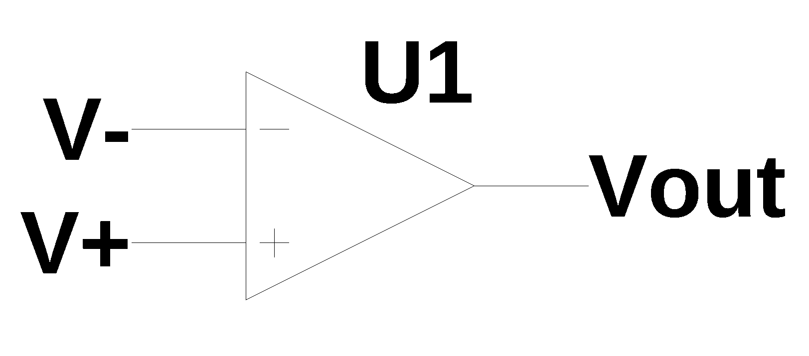
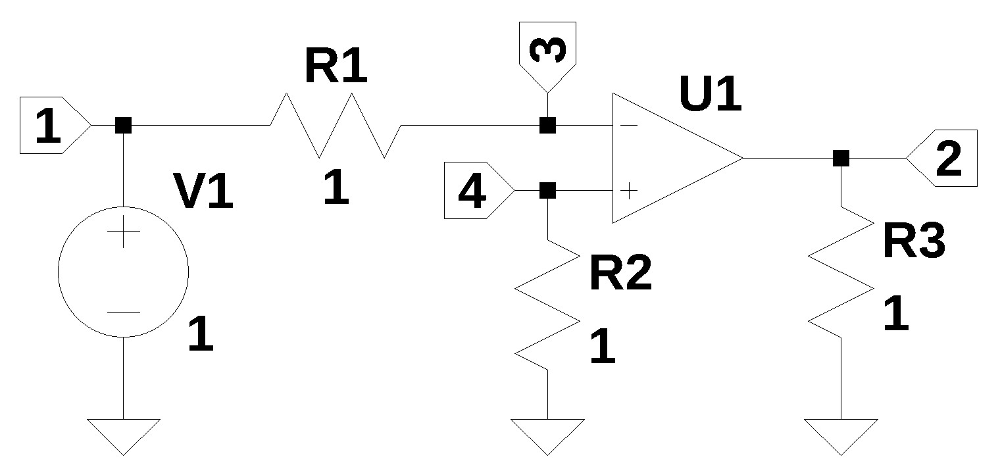

from sympy import *
import numpy as np
from tabulate import tabulate
import pandas as pd
from scipy import signal
import matplotlib.pyplot as plt
import SymMNA
from IPython.display import display, Markdown, Math, Latex
init_printing()34 Modeling Op Amps

34.1 Introduction
The Operational Amplifier or Op Amp, is type of electronic amplifier that has two input terminals, amplifies the voltage difference between the two input terminals while suppresses any voltage common to the two inputs and is usually operated with negative feedback to control the gain of the amplifier. The amplifier typically has a very high differential mode gain, high input impedance and low output impedance. Today Op Amps are commonly impemnted in an intergrated circuit that can contain hundreds of transistors. The Op Amp is included in my sysmbolic MNA code as one of the element types along with resistors, capacitors, inductors, dependent sources and independednt sources.
The schematic symbol for an Op Amp is shown in Figure 34.1. The two input terminals are labled \(V-\) and \(V+\). The \(V-\) terminal is called the inverting input and \(V+\) is called the non-inverting input. \(V_{out}\) is the output terminal of the amplifier. An input on the \(V+\) terminal causes an in phase output and an input on the \(V-\) terminal causes an out of phase output. Not shown, but implied, are power supply and or ground connections. The datasheet for the particular model of Op Amp will show other connections.
Op Amps are very versitile and are used in many types of circuits. A web search will uncover many examples and a few are listed below:
- Operational Amplifier Applications
- Amplifier Circuit Collection
- Collection of Amp Applications
- Handbook of Operational Amplifier Applications
- Op Amps for Everyone, Ron Mancini
The first mass-produced Op Amp, in 1953, was the vacuum tube-based K2-W from GAP/R. The first widely available integrated circuit Op Amp was the Fairchild μA709 operational amplifier, designed by Bob Widlar in 1965. In 1968, the μA709 was replaced by the μA741, which offered better performance while being more stable and easier to setup. A modern version of the μA741 is produced by Texas Instruments, with the part number LM741.
There are more than 30 semiconductor manufactures making general purpose Op Amps priced as low as $0.30 each in small quantities. Under the general purpose catagory, there are thousands of part numbers avaliable from distributers such as Digikey. The world wide market for Op Amps is about $6 billion dollars.
Op Amps can be configured to operate in circuits without feedback, which is how a comparitor works. Some applications configure the Op Amp to have positive feedback and Schmitt trigger is an example of this type of configureation. When the Op Amp is used without feedback or with positive feedback, the amplifier is operating as a non-linear device and non-linear circuits cannot be analyized with the Python MNA code presented in this book.
Only negative feedback Op Amp circuits are supported by the Python MNA code. These circuit configurations typically use resistors to connect the output terminal of the Op Amp to the inverting terminal of the Op Amp. When Op Amps are included in circuits to be analyzed using MNA, the Op Amp model used has negative feed back implied, reguardless of whether such feedback is actually present in the circuit. This is discussed below.
34.2 The ideal Op Amp
The concept of an ideal Op Amp is used when performance limitations of real Op Amps are ignored in order to symplify the circuit analysis. Often the performance limitions of real Op Amps have only minor effects on the operation of the circuit and the engineer will use their judgment to decide if the second order effects of these limitions need to be considered. The ideal Op Amp is described by Equation 34.1. The Op Amp’s inputs consist of a non-inverting input \(V+\) and an inverting input \(V-\), as shown in Figure 34.1. The Op Amp amplifies only the difference in voltage between the two inputs, which is called the differential input voltage. The power supply terminals of a real Op Amp are not included in the model of an ideal Op Amp.
The output voltage of the Op Amp \(V_{out}\) is given by the equation:
\[V_{out} = A_{OL}(V_+ - V_-) \tag{34.1}\]
Where \(A_{OL}\) is the open-loop gain of the amplifier. The value of the open loop gain in real Op Amps is very large, sometimes on the order of 100 dB. The value of \(A_{OL}\) in ideal Op Amps is not needed when the Op Amp is configured with negative feedback. The components in the feedback path determine the gain of the Op Amp circuit independednt of \(A_{OL}\).
The ideal Op Amp has other charasterics such as:
- Infinite gain and bandwidth
- Zero output impedance
- Infinite input impedance
- Zero volts between the two inputs
- Infinite output voltage range
- Infinite bandwidth with zero phase shift and infinite slew rate
- Zero noise
- Infinite common-mode rejection ratio
34.3 MNA Op Amp stamp
MNA is an algorithic procedure for generating network equations. When there is an element type ‘O’, in the netlist, three connection nodes are required. The first node is the inverting input, the second node is the non inverting input and the third node is the output node. The Python code, then makes entries into the B and C matricies based simply on the node numbers of the Op Amp terminals. This is called stamping the matrix, because for each component type a specific template is used.
The B matrix is an n by m matrix with only 0, 1 and -1 elements, where n = number of nodes and m is the number of current unknowns, i_unk. There is one column for each unknown current. The Op Amp model has one unknown current for the output current. In the code that builds the B matrix, a value of 1 is included in the matrix at the index position given by the Op Amp output node number. The snippit of code that performes this operation is shown below.
# generate the B Matrix
sn = 0 # count source number as code walks through the data frame
for i in range(len(df)):
n1 = df.loc[i,'p node']
n2 = df.loc[i,'n node']
n_vout = df.loc[i,'Vout'] # node connected to op amp output
# process elements with input to B matrix
x = df.loc[i,'element'][0] #get 1st letter of element name
:
:
if x == 'O': # op amp type, output connection of the opamp goes in the B matrix
B[n_vout-1,sn] = 1
sn += 1 # increment source count
:
:Each Op Amp the entry in the B matrix lines up with an unknown current in the X vector.
The C matrix is an m by n matrix with only 0, 1 and -1 elements. The code is similar to the B matrix code, except the indices are swapped. The code loops through all the branches and for Op Amps, a 1 is inserted for the non-inverting node and a -1 for the inverting node, unless the terminal is connected to ground. The code snippit is shown below.
# generate the C Matrix
sn = 0 # count source number as code walks through the data frame
for i in range(len(df)):
n1 = df.loc[i,'p node']
n2 = df.loc[i,'n node']
cn1 = df.loc[i,'cp node'] # nodes for controlled sources
cn2 = df.loc[i,'cn node']
n_vout = df.loc[i,'Vout'] # node connected to op amp output
# process elements with input to B matrix
x = df.loc[i,'element'][0] #get 1st letter of element name
:
:
if x == 'O': # op amp type, input connections of the opamp go into the C matrix
# C[sn,n_vout-1] = 1
if i_unk > 1: #is B greater than 1 by n?, O
# check to see if any terminal is grounded
# then stamp the matrix
if n1 != 0:
C[sn,n1-1] = 1
if n2 != 0:
C[sn,n2-1] = -1
else:
if n1 != 0:
C[n1-1] = 1
if n2 != 0:
C[n2-1] = -1
sn += 1 # increment source count
:
:The above code mathematically equates the voltages at the input input terminals equal to each other, \(v_n = v_m\), where n and m are the node numbers. By default, the MNA Op Amp model is operating as if negative feedback is present in the circuit, reguardless of whether such feedback is actually present in the surrounding network. The Python MNA code does not verify that the Op Amp has negative feedback applied by the surrounding network. Consequencely, the Python MNA code is agnostic with reguard to feedback and which input terminal is used. The Python MNA code Op Amp model should be used with some care and the results need to be checked.
The Nullor is a two port device which can be used to model ideal Op Amps. The Python NMA Op Amp and the Nullor have the same NMA stamp and are equalivent.
34.4 Op Amp feedback test circuit
The circuit in Figure 34.2 is used to examine various Op Amp feedback connections. The following Op Amp circuits with various elements in the feedback path are examined below.
- No feedback
- R in the feed back path
- Swap Op Amp input connections
- C in feedback path
- C and R in parallel in feedback path
5a. C and R in series in feedback path - L in feedback path
- L and R in series in the feedback path
- L and R in parallel in the feedback path
The following Python modules are used in this notebook.
34.5 Op Amp test circuit
An Op Amp test circuit, shown below, is used to explore various feedback configurations. A resistor is used to terminate each Op Amp terminal. A DC voltage source, V1, is used as the stimulus to the circuit and all the resistor values are set to one.

34.6 Case 1: No feedback
The net list for Figure 34.2 was obtained from LTSpice.
net_list1 = '''
V1 1 0 1
O1 3 4 2
R1 3 1 1
R3 2 0 1
R2 4 0 1
'''Generate the network equations.
report, network_df, df2, A1, X1, Z1 = SymMNA.smna(net_list1)
# Put matricies into SymPy
X1 = Matrix(X1)
Z1 = Matrix(Z1)
NE1_sym = Eq(A1*X1,Z1)Generate markdown text to display the network equations.
temp = ''
for i in range(len(X1)):
temp += '${:s}$<br>'.format(latex(Eq((A1*X1)[i:i+1][0],Z1[i])))
Markdown(temp)\(I_{V1} + \frac{v_{1}}{R_{1}} - \frac{v_{3}}{R_{1}} = 0\)
\(I_{O1} + \frac{v_{2}}{R_{3}} = 0\)
\(- \frac{v_{1}}{R_{1}} + \frac{v_{3}}{R_{1}} = 0\)
\(\frac{v_{4}}{R_{2}} = 0\)
\(v_{1} = V_{1}\)
\(v_{3} - v_{4} = 0\)
Shown above are the six equations generatated by NMA. The last three equations are rather simple.
The symbols generated by the Python code are extraced by the SymPy function free_symbols and then declared as SymPy variables.
# turn the free symbols into SymPy variables
var(str(NE1_sym.free_symbols).replace('{','').replace('}',''))\(\displaystyle \left( R_{3}, \ v_{1}, \ R_{2}, \ v_{3}, \ v_{2}, \ I_{V1}, \ V_{1}, \ R_{1}, \ v_{4}, \ I_{O1}\right)\)
Attemp to solve the equations.
U1_sym = solve(NE1_sym,X1)
U1_sym\(\displaystyle \left[ \right]\)
No solution is found. By inspection we can see that there are three equations:
\(I_{V1} + \frac{v_{1}}{R_{1}} - \frac{v_{3}}{R_{1}} = 0\)
\(I_{O1} + \frac{v_{2}}{R_{3}} = 0\)
\(- \frac{v_{1}}{R_{1}} + \frac{v_{3}}{R_{1}} = 0\)
and four knowns: \(v_2\), \(v_3\), \(I_{V1}\) and \(I_{O1}\).
So without a connection from node 2 to the rest of the network, the voltage and current at node 2 cannot be solved for.
34.7 Case 2: R in the feed back path
R added to network between nodes 2 and 3, by manually editing the netlist below.
net_list2 = '''
V1 1 0 1
O1 3 4 2
R1 3 1 1
R3 2 0 1
R2 4 0 1
R 2 3 1
'''Generate the network equations.
report, network_df, df2, A2, X2, Z2 = SymMNA.smna(net_list2)
# Put matricies into SymPy
X2 = Matrix(X2)
Z2 = Matrix(Z2)
NE2_sym = Eq(A2*X2,Z2)Both case 1 and case 2 have a 6 by 6 A matrix, but R shows up in the off diagonal in case 2.
A2\(\displaystyle \left[\begin{matrix}\frac{1}{R_{1}} & 0 & - \frac{1}{R_{1}} & 0 & 1 & 0\\0 & \frac{1}{R_{3}} + \frac{1}{R} & - \frac{1}{R} & 0 & 0 & 1\\- \frac{1}{R_{1}} & - \frac{1}{R} & \frac{1}{R_{1}} + \frac{1}{R} & 0 & 0 & 0\\0 & 0 & 0 & \frac{1}{R_{2}} & 0 & 0\\1 & 0 & 0 & 0 & 0 & 0\\0 & 0 & 1 & -1 & 0 & 0\end{matrix}\right]\)
Generate markdown text to display the network equations.
temp = ''
for i in range(len(X2)):
temp += '${:s}$<br>'.format(latex(Eq((A2*X2)[i:i+1][0],Z2[i])))
Markdown(temp)\(I_{V1} + \frac{v_{1}}{R_{1}} - \frac{v_{3}}{R_{1}} = 0\)
\(I_{O1} + v_{2} \cdot \left(\frac{1}{R_{3}} + \frac{1}{R}\right) - \frac{v_{3}}{R} = 0\)
\(v_{3} \cdot \left(\frac{1}{R_{1}} + \frac{1}{R}\right) - \frac{v_{1}}{R_{1}} - \frac{v_{2}}{R} = 0\)
\(\frac{v_{4}}{R_{2}} = 0\)
\(v_{1} = V_{1}\)
\(v_{3} - v_{4} = 0\)
The symbols generated by the Python code are extraced by the SymPy function free_symbols and then declared as SymPy variables.
# turn the free symbols into SymPy variables
var(str(NE2_sym.free_symbols).replace('{','').replace('}',''))\(\displaystyle \left( R_{3}, \ v_{1}, \ R, \ R_{2}, \ v_{3}, \ v_{2}, \ I_{V1}, \ V_{1}, \ R_{1}, \ v_{4}, \ I_{O1}\right)\)
Solve the equations and display the results.
U2_sym = solve(NE2_sym,X2)
temp = ''
for i in U2_sym.keys():
temp += '${:s} = {:s}$<br>'.format(latex(i),latex(U2_sym[i]))
Markdown(temp)\(v_{1} = V_{1}\)
\(v_{2} = - \frac{R V_{1}}{R_{1}}\)
\(v_{3} = 0\)
\(v_{4} = 0\)
\(I_{V1} = - \frac{V_{1}}{R_{1}}\)
\(I_{O1} = \frac{R V_{1} + R_{3} V_{1}}{R_{1} R_{3}}\)
Notice that \(v_3\) and \(v_4\) are both zero volts. There is no current flowing into the Op Amp input terminals.
Solving for the transfer function at node 2.
H2_sym = U2_sym[v2]/U2_sym[v1]
H2_sym #.simplify()\(\displaystyle - \frac{R}{R_{1}}\)
34.8 Case 3: Swap Op Amp input connections
As discussed above, the MNA code equates the voltages at the Op Amps input terminals. This implies that there is negative feedback present in the circuit. Because the voltage at thes terminal are equal, there is no distinction between the two as far as a mathematical solution to the network equations is concerned. This is illustrated below.
net_list3 = '''
V1 1 0 1
*O1 3 4 2
O1 4 3 2
R1 3 1 1
R3 2 0 1
R2 4 0 1
R 2 3 1
'''Generate the network equations.
report, network_df, df2, A3, X3, Z3 = SymMNA.smna(net_list3)
# Put matricies into SymPy
X3 = Matrix(X3)
Z3 = Matrix(Z3)
NE3_sym = Eq(A3*X3,Z3)Generate markdown text to display the network equations.
temp = ''
for i in range(len(X3)):
temp += '${:s}$<br>'.format(latex(Eq((A3*X3)[i:i+1][0],Z3[i])))
Markdown(temp)\(I_{V1} + \frac{v_{1}}{R_{1}} - \frac{v_{3}}{R_{1}} = 0\)
\(I_{O1} + v_{2} \cdot \left(\frac{1}{R_{3}} + \frac{1}{R}\right) - \frac{v_{3}}{R} = 0\)
\(v_{3} \cdot \left(\frac{1}{R_{1}} + \frac{1}{R}\right) - \frac{v_{1}}{R_{1}} - \frac{v_{2}}{R} = 0\)
\(\frac{v_{4}}{R_{2}} = 0\)
\(v_{1} = V_{1}\)
\(- v_{3} + v_{4} = 0\)
Last equation,
\(- v_{3} + v_{4} = 0\)
is identical anlgebracily to the equation generated in Case 1 above, which is:
\(v_{3} - v_{4} = 0\)
This shows that because the Op Amp model defines \(V+\) and \(V-\) to be equal, the terminals of the NMA Op Amp model can be swapped.
The symbols generated by the Python code are extraced by the SymPy function free_symbols and then declared as SymPy variables.
# turn the free symbols into SymPy variables
var(str(NE3_sym.free_symbols).replace('{','').replace('}',''))\(\displaystyle \left( R_{3}, \ v_{1}, \ R, \ R_{2}, \ v_{3}, \ v_{2}, \ I_{V1}, \ V_{1}, \ R_{1}, \ v_{4}, \ I_{O1}\right)\)
Solve the equations and display the results.
U3_sym = solve(NE3_sym,X3)
temp = ''
for i in U3_sym.keys():
temp += '${:s} = {:s}$<br>'.format(latex(i),latex(U3_sym[i]))
Markdown(temp)\(v_{1} = V_{1}\)
\(v_{2} = - \frac{R V_{1}}{R_{1}}\)
\(v_{3} = 0\)
\(v_{4} = 0\)
\(I_{V1} = - \frac{V_{1}}{R_{1}}\)
\(I_{O1} = \frac{R V_{1} + R_{3} V_{1}}{R_{1} R_{3}}\)
Notice that \(v_3\) and \(v_4\) are both zero volts. There is no current flowing into the Op Amp input terminals.
Solving for the transfer function at node 2.
H3_sym = U3_sym[v2]/U3_sym[v1]
H3_sym #.simplify()\(\displaystyle - \frac{R}{R_{1}}\)
34.9 Case 4: C in feedback path
net_list4 = '''
V1 1 0 1
O1 3 4 2
R1 3 1 1
R3 2 0 1
R2 4 0 1
C 2 3 1
'''Generate the network equations.
report, network_df, df2, A4, X4, Z4 = SymMNA.smna(net_list4)
# Put matricies into SymPy
X4 = Matrix(X4)
Z4 = Matrix(Z4)
NE4_sym = Eq(A4*X4,Z4)Generate markdown text to display the network equations.
temp = ''
for i in range(len(X4)):
temp += '${:s}$<br>'.format(latex(Eq((A4*X4)[i:i+1][0],Z4[i])))
Markdown(temp)\(I_{V1} + \frac{v_{1}}{R_{1}} - \frac{v_{3}}{R_{1}} = 0\)
\(- C s v_{3} + I_{O1} + v_{2} \left(C s + \frac{1}{R_{3}}\right) = 0\)
\(- C s v_{2} + v_{3} \left(C s + \frac{1}{R_{1}}\right) - \frac{v_{1}}{R_{1}} = 0\)
\(\frac{v_{4}}{R_{2}} = 0\)
\(v_{1} = V_{1}\)
\(v_{3} - v_{4} = 0\)
The symbols generated by the Python code are extraced by the SymPy function free_symbols and then declared as SymPy variables.
# turn the free symbols into SymPy variables
var(str(NE4_sym.free_symbols).replace('{','').replace('}',''))\(\displaystyle \left( s, \ R_{3}, \ v_{1}, \ R_{2}, \ v_{3}, \ v_{2}, \ I_{V1}, \ V_{1}, \ C, \ R_{1}, \ v_{4}, \ I_{O1}\right)\)
Solve and display the solution.
U4_sym = solve(NE4_sym,X4)
temp = ''
for i in U4_sym.keys():
temp += '${:s} = {:s}$<br>'.format(latex(i),latex(U4_sym[i]))
Markdown(temp)\(v_{1} = V_{1}\)
\(v_{2} = - \frac{V_{1}}{C R_{1} s}\)
\(v_{3} = 0\)
\(v_{4} = 0\)
\(I_{V1} = - \frac{V_{1}}{R_{1}}\)
\(I_{O1} = \frac{C R_{3} V_{1} s + V_{1}}{C R_{1} R_{3} s}\)
Solving for the transfer function at node 2.
U4_sym[v2]/U4_sym[v1]\(\displaystyle - \frac{1}{C R_{1} s}\)
Seems correct.
34.10 Case 5: C and R in parallel in feedback path
net_list5 = '''
V1 1 0 1
O1 3 4 2
R1 3 1 1
R3 2 0 1
R2 4 0 1
C 2 3 1
R 2 3 1
'''Generate the network equations.
report, network_df, df2, A5, X5, Z5 = SymMNA.smna(net_list5)
# Put matricies into SymPy
X5 = Matrix(X5)
Z5 = Matrix(Z5)
NE5_sym = Eq(A5*X5,Z5)Generate markdown text to display the network equations.
temp = ''
for i in range(len(X5)):
temp += '${:s}$<br>'.format(latex(Eq((A5*X5)[i:i+1][0],Z5[i])))
Markdown(temp)\(I_{V1} + \frac{v_{1}}{R_{1}} - \frac{v_{3}}{R_{1}} = 0\)
\(I_{O1} + v_{2} \left(C s + \frac{1}{R_{3}} + \frac{1}{R}\right) + v_{3} \left(- C s - \frac{1}{R}\right) = 0\)
\(v_{2} \left(- C s - \frac{1}{R}\right) + v_{3} \left(C s + \frac{1}{R_{1}} + \frac{1}{R}\right) - \frac{v_{1}}{R_{1}} = 0\)
\(\frac{v_{4}}{R_{2}} = 0\)
\(v_{1} = V_{1}\)
\(v_{3} - v_{4} = 0\)
The symbols generated by the Python code are extraced by the SymPy function free_symbols and then declared as SymPy variables.
# turn the free symbols into SymPy variables
var(str(NE5_sym.free_symbols).replace('{','').replace('}',''))\(\displaystyle \left( s, \ R_{3}, \ v_{1}, \ R, \ R_{2}, \ v_{3}, \ v_{2}, \ I_{V1}, \ V_{1}, \ C, \ R_{1}, \ v_{4}, \ I_{O1}\right)\)
Solve and display the solution.
U5_sym = solve(NE5_sym,X5)
temp = ''
for i in U5_sym.keys():
temp += '${:s} = {:s}$<br>'.format(latex(i),latex(U5_sym[i]))
Markdown(temp)\(v_{1} = V_{1}\)
\(v_{2} = - \frac{R V_{1}}{C R R_{1} s + R_{1}}\)
\(v_{3} = 0\)
\(v_{4} = 0\)
\(I_{V1} = - \frac{V_{1}}{R_{1}}\)
\(I_{O1} = \frac{C R R_{3} V_{1} s + R V_{1} + R_{3} V_{1}}{C R R_{1} R_{3} s + R_{1} R_{3}}\)
Solving for the transfer function at node 2.
U5_sym[v2]/U5_sym[v1]\(\displaystyle - \frac{R}{C R R_{1} s + R_{1}}\)
At \(s=0\) the transfer function reduces correctly to the DC case. For \(s=\infty\), the capacitor is a short and equation is not correct, but then the circuit now has a short accross R and this is not reflected in the netlist. So at \(s=\infty\), the solution needs some interperation and maybe the netlist needs to edited to correctly reflect the value of \(Z_c\) at \(\infty\).
The result seems correct for \(s \ne \infty\).
34.11 Case 5a: C and R in series in feedback path
net_list5a = '''
V1 1 0 1
O1 3 4 2
R1 3 1 1
R3 2 0 1
R2 4 0 1
C 2 5 1
R 3 5 1
'''Generate the network equations.
report, network_df, df2, A5a, X5a, Z5a = SymMNA.smna(net_list5a)
# Put matricies into SymPy
X5a = Matrix(X5a)
Z5a = Matrix(Z5a)
NE5a_sym = Eq(A5a*X5a,Z5a)Generate markdown text to display the network equations.
temp = ''
for i in range(len(X5a)):
temp += '${:s}$<br>'.format(latex(Eq((A5a*X5a)[i:i+1][0],Z5a[i])))
Markdown(temp)\(I_{V1} + \frac{v_{1}}{R_{1}} - \frac{v_{3}}{R_{1}} = 0\)
\(- C s v_{5} + I_{O1} + v_{2} \left(C s + \frac{1}{R_{3}}\right) = 0\)
\(v_{3} \cdot \left(\frac{1}{R_{1}} + \frac{1}{R}\right) - \frac{v_{1}}{R_{1}} - \frac{v_{5}}{R} = 0\)
\(\frac{v_{4}}{R_{2}} = 0\)
\(- C s v_{2} + v_{5} \left(C s + \frac{1}{R}\right) - \frac{v_{3}}{R} = 0\)
\(v_{1} = V_{1}\)
\(v_{3} - v_{4} = 0\)
The symbols generated by the Python code are extraced by the SymPy function free_symbols and then declared as SymPy variables.
# turn the free symbols into SymPy variables
var(str(NE5a_sym.free_symbols).replace('{','').replace('}',''))\(\displaystyle \left( s, \ R_{3}, \ v_{1}, \ R, \ R_{2}, \ v_{3}, \ v_{2}, \ I_{V1}, \ v_{4}, \ V_{1}, \ C, \ R_{1}, \ v_{5}, \ I_{O1}\right)\)
Solve and display the solution.
U5a_sym = solve(NE5a_sym,X5a)
temp = ''
for i in U5a_sym.keys():
temp += '${:s} = {:s}$<br>'.format(latex(i),latex(U5a_sym[i]))
Markdown(temp)\(v_{1} = V_{1}\)
\(v_{2} = \frac{- C R V_{1} s - V_{1}}{C R_{1} s}\)
\(v_{3} = 0\)
\(v_{4} = 0\)
\(v_{5} = - \frac{R V_{1}}{R_{1}}\)
\(I_{V1} = - \frac{V_{1}}{R_{1}}\)
\(I_{O1} = \frac{C R V_{1} s + C R_{3} V_{1} s + V_{1}}{C R_{1} R_{3} s}\)
Solving for the transfer function at node 2.
(U5a_sym[v2]/U5a_sym[v1]).simplify()\(\displaystyle - \frac{R}{R_{1}} - \frac{1}{C R_{1} s}\)
The result seems correct.
34.12 Case 6: L in feedback path
net_list6 = '''
V1 1 0 1
O1 3 4 2
R1 3 1 1
R3 2 0 1
R2 4 0 1
L 2 3 1
'''Generate the network equations.
report, network_df, df2, A6, X6, Z6 = SymMNA.smna(net_list6)
# Put matricies into SymPy
X6 = Matrix(X6)
Z6 = Matrix(Z6)
NE6_sym = Eq(A6*X6,Z6)Generate markdown text to display the network equations.
temp = ''
for i in range(len(X6)):
temp += '${:s}$<br>'.format(latex(Eq((A6*X6)[i:i+1][0],Z6[i])))
Markdown(temp)\(I_{V1} + \frac{v_{1}}{R_{1}} - \frac{v_{3}}{R_{1}} = 0\)
\(I_{L} + I_{O1} + \frac{v_{2}}{R_{3}} = 0\)
\(- I_{L} - \frac{v_{1}}{R_{1}} + \frac{v_{3}}{R_{1}} = 0\)
\(\frac{v_{4}}{R_{2}} = 0\)
\(v_{1} = V_{1}\)
\(v_{3} - v_{4} = 0\)
\(- I_{L} L s + v_{2} - v_{3} = 0\)
The symbols generated by the Python code are extraced by the SymPy function free_symbols and then declared as SymPy variables.
# turn the free symbols into SymPy variables
var(str(NE6_sym.free_symbols).replace('{','').replace('}',''))\(\displaystyle \left( s, \ R_{3}, \ v_{1}, \ R_{2}, \ L, \ I_{L}, \ v_{3}, \ v_{2}, \ I_{V1}, \ V_{1}, \ R_{1}, \ v_{4}, \ I_{O1}\right)\)
Solve and display the solution.
U6_sym = solve(NE6_sym,X6)
temp = ''
for i in U6_sym.keys():
temp += '${:s} = {:s}$<br>'.format(latex(i),latex(U6_sym[i]))
Markdown(temp)\(v_{1} = V_{1}\)
\(v_{2} = - \frac{L V_{1} s}{R_{1}}\)
\(v_{3} = 0\)
\(v_{4} = 0\)
\(I_{V1} = - \frac{V_{1}}{R_{1}}\)
\(I_{O1} = \frac{L V_{1} s + R_{3} V_{1}}{R_{1} R_{3}}\)
\(I_{L} = - \frac{V_{1}}{R_{1}}\)
Solving for the transfer function at node 2.
U6_sym[v2]/U6_sym[v1]\(\displaystyle - \frac{L s}{R_{1}}\)
At \(s=0\) the transfer function does not reduce correctly to the DC case. For \(s=\infty\), the inductor is an open and equation is correct.
The result seems correct for \(s \ne 0\).
34.13 Case 7: L and R in series in the feedback path
net_list7 = '''
V1 1 0 1
O1 3 4 2
R1 3 1 1
R3 2 0 1
R2 4 0 1
L 2 5 1
R 3 5 1
'''Generate the network equations.
report, network_df, df2, A7, X7, Z7 = SymMNA.smna(net_list7)
# Put matricies into SymPy
X7 = Matrix(X7)
Z7 = Matrix(Z7)
NE7_sym = Eq(A7*X7,Z7)Generate markdown text to display the network equations.
temp = ''
for i in range(len(X7)):
temp += '${:s}$<br>'.format(latex(Eq((A7*X7)[i:i+1][0],Z7[i])))
Markdown(temp)\(I_{V1} + \frac{v_{1}}{R_{1}} - \frac{v_{3}}{R_{1}} = 0\)
\(I_{L} + I_{O1} + \frac{v_{2}}{R_{3}} = 0\)
\(v_{3} \cdot \left(\frac{1}{R_{1}} + \frac{1}{R}\right) - \frac{v_{1}}{R_{1}} - \frac{v_{5}}{R} = 0\)
\(\frac{v_{4}}{R_{2}} = 0\)
\(- I_{L} - \frac{v_{3}}{R} + \frac{v_{5}}{R} = 0\)
\(v_{1} = V_{1}\)
\(v_{3} - v_{4} = 0\)
\(- I_{L} L s + v_{2} - v_{5} = 0\)
The symbols generated by the Python code are extraced by the SymPy function free_symbols and then declared as SymPy variables.
# turn the free symbols into SymPy variables
var(str(NE7_sym.free_symbols).replace('{','').replace('}',''))\(\displaystyle \left( s, \ R_{3}, \ v_{1}, \ R, \ R_{2}, \ L, \ I_{L}, \ v_{3}, \ v_{2}, \ I_{V1}, \ v_{4}, \ V_{1}, \ R_{1}, \ v_{5}, \ I_{O1}\right)\)
Solve and display the solution.
U7_sym = solve(NE7_sym,X7)
temp = ''
for i in U7_sym.keys():
temp += '${:s} = {:s}$<br>'.format(latex(i),latex(U7_sym[i]))
Markdown(temp)\(v_{1} = V_{1}\)
\(v_{2} = \frac{- L V_{1} s - R V_{1}}{R_{1}}\)
\(v_{3} = 0\)
\(v_{4} = 0\)
\(v_{5} = - \frac{R V_{1}}{R_{1}}\)
\(I_{V1} = - \frac{V_{1}}{R_{1}}\)
\(I_{O1} = \frac{L V_{1} s + R V_{1} + R_{3} V_{1}}{R_{1} R_{3}}\)
\(I_{L} = - \frac{V_{1}}{R_{1}}\)
Solving for the transfer function at node 2.
(U7_sym[v2]/U7_sym[v1]).simplify()\(\displaystyle \frac{- L s - R}{R_{1}}\)
The result seems correct for \(s \ne \infty\).
34.14 Case 8: L and R in parallel in the feedback path
net_list8 = '''
V1 1 0 1
O1 3 4 2
R1 3 1 1
R3 2 0 1
R2 4 0 1
L 2 3 1
R 2 3 1
'''Generate the network equations.
report, network_df, df2, A8, X8, Z8 = SymMNA.smna(net_list8)
# Put matricies into SymPy
X8 = Matrix(X8)
Z8 = Matrix(Z8)
NE8_sym = Eq(A8*X8,Z8)Generate markdown text to display the network equations.
temp = ''
for i in range(len(X8)):
temp += '${:s}$<br>'.format(latex(Eq((A8*X8)[i:i+1][0],Z8[i])))
Markdown(temp)\(I_{V1} + \frac{v_{1}}{R_{1}} - \frac{v_{3}}{R_{1}} = 0\)
\(I_{L} + I_{O1} + v_{2} \cdot \left(\frac{1}{R_{3}} + \frac{1}{R}\right) - \frac{v_{3}}{R} = 0\)
\(- I_{L} + v_{3} \cdot \left(\frac{1}{R_{1}} + \frac{1}{R}\right) - \frac{v_{1}}{R_{1}} - \frac{v_{2}}{R} = 0\)
\(\frac{v_{4}}{R_{2}} = 0\)
\(v_{1} = V_{1}\)
\(v_{3} - v_{4} = 0\)
\(- I_{L} L s + v_{2} - v_{3} = 0\)
The symbols generated by the Python code are extraced by the SymPy function free_symbols and then declared as SymPy variables.
# turn the free symbols into SymPy variables
var(str(NE8_sym.free_symbols).replace('{','').replace('}',''))\(\displaystyle \left( s, \ R_{3}, \ v_{1}, \ R, \ R_{2}, \ L, \ I_{L}, \ v_{3}, \ v_{2}, \ I_{V1}, \ V_{1}, \ R_{1}, \ v_{4}, \ I_{O1}\right)\)
Solve the equations.
U8_sym = solve(NE8_sym,X8)
temp = ''
for i in U8_sym.keys():
temp += '${:s} = {:s}$<br>'.format(latex(i),latex(U8_sym[i]))
Markdown(temp)\(v_{1} = V_{1}\)
\(v_{2} = - \frac{L R V_{1} s}{L R_{1} s + R R_{1}}\)
\(v_{3} = 0\)
\(v_{4} = 0\)
\(I_{V1} = - \frac{V_{1}}{R_{1}}\)
\(I_{O1} = \frac{L R V_{1} s + L R_{3} V_{1} s + R R_{3} V_{1}}{L R_{1} R_{3} s + R R_{1} R_{3}}\)
\(I_{L} = - \frac{R V_{1}}{L R_{1} s + R R_{1}}\)
Solving for the transfer function at node 2.
(U8_sym[v2]/U8_sym[v1]).simplify()\(\displaystyle - \frac{L R s}{R_{1} \left(L s + R\right)}\)
The result seems correct for \(s \ne \infty\) or \(s \ne 0\).
34.15 Summary
- Resistors in the feedback path seem to give the correct results
- Inductors and capacitors in the feedback path seem to work as long as \(s \ne \infty \space \text {or} \space \ne 0\).
- If a solution is only desired for non-zero or non-infinit requencies, then the results seem correct.